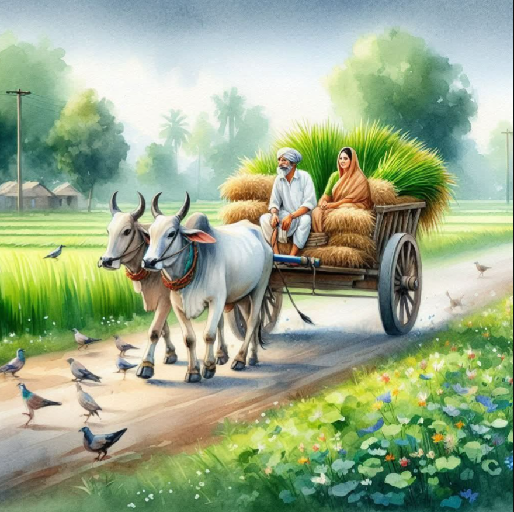
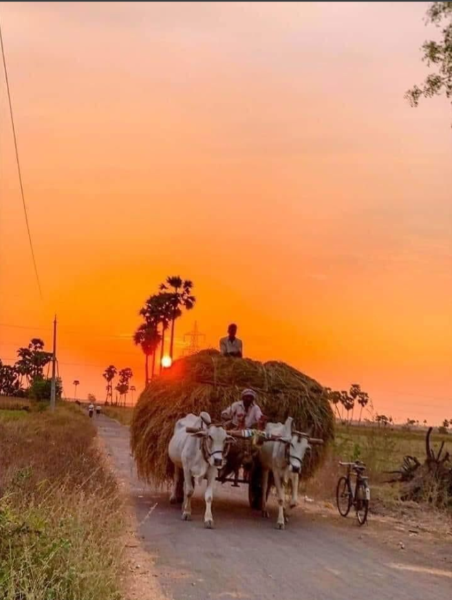
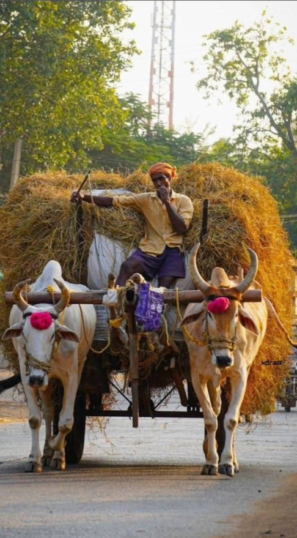
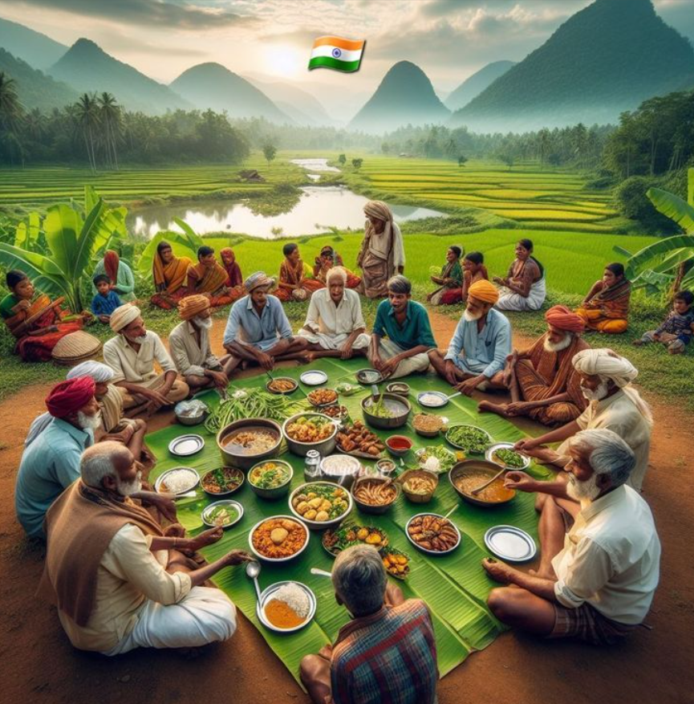
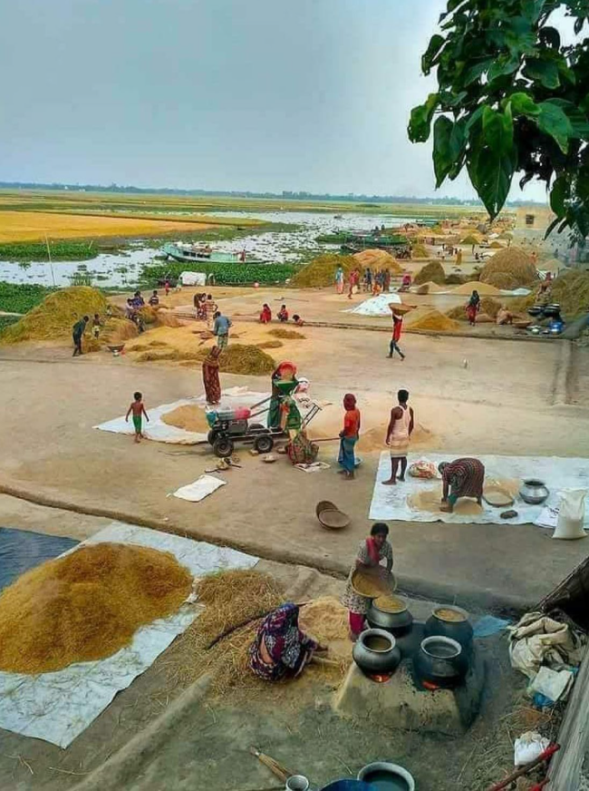
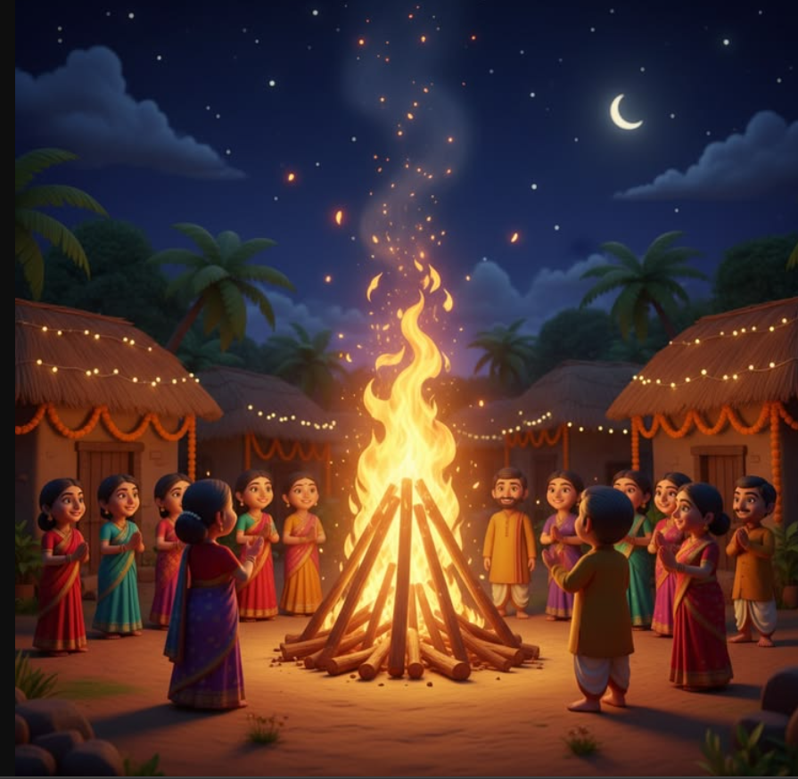

Farming is a beautiful journey that connects humans with nature. Green landscapes, village traditions, harvest celebrations, and community bonding make the life of farmers joyful and meaningful.






Agriculture connects people with nature and provides food for the entire world. Farmers work day and night nurturing crops, protecting soil fertility, and creating beautiful green landscapes that symbolize life and prosperity.
Village life revolves around agriculture. Farmers wake up early, travel through fields, and work with dedication. The peaceful environment, fresh air, and community cooperation make rural life unique and meaningful.
Harvest season brings immense joy to farmers. After months of hard work, crops are collected and families celebrate together. Villages become lively with laughter, food, and gratitude for nature’s blessings.
Farmers celebrate many festivals to thank nature for successful harvests. These festivals represent gratitude, community bonding, and cultural traditions.